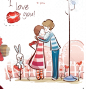

Cuộc gặp gỡ của chúng ta là khởi đầu cho tình yêu
Tình yêu của chúng ta là khởi đầu của hạnh phúc
Hạnh phúc của chúng ta đơn giản chính là được ở bên nhau
Hành trình tình yêu của chúng ta
-

Thú thật cuộc gặp gỡ đấy a không biết a với e có duyên với nhau không nhưng mà đối với a nó thật sự là một lần gặp gỡ tạo nên mối quan hệ giữa a và em
Ngày24 tháng 02 năm 2022 -

nó cũng là ngày mà 2 đứa mình bắt đầu yêu nhau nhưng mà ngày hôm đấy nó lại rất là khác so với mọi người mọi người nghĩ là a và e yêu nhau a sẽ tỏ tình này nọ sẽ lãng mạng tặng hoa các thứ nhưng không a với e yêu nhau là vì a với e ngủ với nhau xong yêu nhau nghe nó buồn cười nhỉ a viết ra a còn thấy rất là buồn cười luôn ấy
Ngày 27 tháng 2 năm 2022 -

Và những ngày sau đó là những cuộc trò chuyện vui vẻ có đi chơi với nhau được cái a với e ở gần nhau hàng ngày được ăn đồ em nấu được bên cạnh e mỗi tối ôm e ngủ
-

mối quan hệ nào cũng vậy không thể mãi hòa thuận vui vẻ được rồi cũng đến lúc a với e cũng có những cuộc cãi vã những vấn đề có thể k hiểu nhau hai đứa đều cứng đầu và cố chấp nhưng e vẫn là người hiểu chuyện và bỏ qua cho nhau vì nó cũng chỉ là vấn đề lặt vặt a
-

2 đứa giai đoạn đầu cũng có thú thật với nhau là đã không từng yêu đối phương chỉ là vì lợi dụng hoặc là chơi cho qua nhưng a đã thay đổi cách nhìn của a về e và ngày hôm đó a đã xác định được là a đã yêu thật lòng hôm đấy a có đi đá bóng mưa về và tối hôm đấy a đã sốt cao e đã bên cạnh a chăm sóc cả đêm thay khăn đánh cảm cho a từ lúc đó a đã k còn có suy nghĩ yêu chơi nữa r
Ngày 13 tháng 6 năm 2022 -

a đã nghĩ rất lâu có nên nói vấn đề này vào đây không nhưng a nghĩ là mình nên nói vì nó có thể là kỉ niệm thực sự làm hai đứa nhớ mãi e đã lừa dối a và đi chơi với nyc a k biết là e có giận a khi a nói nó vào đây k nhưng lần đó a đã chọn tin tưởng e và bỏ qua và đến thời điểm hiện tại a nghĩ là mình đã đúng
Ngày 13 tháng 7 năm 2020 -

sau khoảng thời gian đấy là a cũng gặp chuyện về mấy đứa bạn và e đã đủ kiên nhẫn để khuyên a nên rời đi và chuyển ra ở riêng a cảm thấy thật may mắn khi có e lúc đấy đã luôn động viên an ủi và thuyết phục a a còn nợ e một lời cảm ơn a cảm ơn e rất nhiều đấy cũng là lý do mà a yêu e nhiều đến vậy
Ngày 3 tháng 8 năm 2022 -

mình chuyển ra ở riêng có rất nhiều thời gian bên cạnh nhau mặc dù nó chỉ là một khoảng thời gian ngắn ngủi thôi nhưng a lại rất trân trọng nó vì nó mà a với e cạnh nhau nhiều hơn hiểu nhau nhiều hơn biết nhau cần gì nhưng nó cũng là lúc mà mình có cực nhiều bất đồng quan điểm về nhiều thứ a hay làm e cáu e giận hay làm e không vui hay để ý đến những thứ linh tinh mà quên đi mình còn có e a nhớ hôm đấy ngày 18/8 a và e đã cãi nhau thực sự rất to a là người cứng đầu e là người mất bình tĩnh a nghĩ rằng a và e chỉ đến đây thôi e đã dọn hết vào vali và rời đi trong đêm nhưng vào lúc đấy bản thân a cảm thấy mình là người có lỗi nhất với e cũng là vì a ích kỉ mà đã làm e cáu e giận cũng may là e đủ bao dung để tha thứ và chịu ở lại vì a
ngày 18 tháng 8 năm 2022 -

rồi cũng đến ngày mình phải xa cách nhau e phải đi nước ngoài để học để kiếm tiền a phải ở lại để học hai đứa thật sự phải xa nhau a thực sự thực sự rất là tiếc giá như thời gian đầu a trân trọng e hơn a bên cạnh e nhiều hơn a yêu ngay từ đầu thì a đã có nhiều hơn 1 khoảng thời gian bên cạnh em ngày mà e đi a cũng chỉ nén nước mắt lại đêm về chỉ biết khóc 1 mình và nhớ e thôi ngày e đi a rất là sợ tiễn e đi a sợ e vì a mà k muốn đi nữa a sợ vì a mà e bị lay động a sợ vì a mà e lại phải khóc sướt mướt a sợ nhìn thấy e khóc a chỉ dám ở lại và chúc e bình an mà thôi a mong rằng khi ngày e trở về a sẽ là người đón e đầu tiên
Ngày 2 tháng 10 năm 2020 -

e có để ý không không có 1 ngày lễ nào của 2 đứa mà mình bên cạnh nhau cả giờ a nghĩ lại mới thấy tiếc vì đã không biết trân trọng khoảng thời gian bên cạnh nhau ngày sinh nhật e thì e đi chơi với bạn a k đi được sinh nhật a thì e bay rồi không bên cạnh nhau được
-

những ngày tháng sau đó a và e chỉ nhìn nhau qua 2 cái màn hình điện thoại nhớ nhau cũng k thể chạy đến ôm nhau được có chuyện buồn a cũng k thể ở cạnh e và ôm e vào lòng cãi nhau cũng k thể bên cạnh nhau mà nói cho nhau hiểu giải thích cho nhau nghe ôm nhau mỗi lần giận dỗi
-

cũng có một vài lần e dỗi a a dỗi mình không giữ được bình tĩnh mà nói ra những lời làm đối phương đau lòng nhưng a mong rằng mình sẽ hiểu được và thay đổi vì nhau
Một vài lời nhắn nhủ của a dành cho e
Em có thể mượn cuộc sống của anh để nói chuyện, chia sẻ những vui buồn cùng nhau. Có thể sẽ không có ai yêu em nhiều hơn anh. Những năm tháng dài sau này, chỉ có anh sẵn sàng đồng hành cùng em. Anh muốn trái tim của anh cũng như là trái tim của em, chúng ta sẽ hòa vào nhau, sẽ sống theo nó .A muốn 2 đứa cùng cố gắng vượt qua thời gian khó khăn này cố gắng để sau này khi bên cạnh nhau mình có thể yêu nhau nhiều hơn vì quãng thời gian này mình còn vượt qua được thì lo gì chuyện say này nữa Cố gắng cùng với a nhé( A YÊU EM RẤT NHIỀU ĐẤY) .
.jpg)
.jpg)
.jpg)
.jpg)
.jpg)
.jpg)
.jpg)
.jpg)
.jpg)
.jpg)